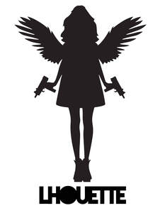

Trade Mark Journal No.2025/047 21 November 2025
UK00004292183 10 November 2025 (2,6,9,14,16,19,20,24,25,35,41,42)

- Class 2
- Watercolor paints for use in art; Watercolour paints for use in art; Metal foil for use in painting, decorating, printing and art; Metals in foil form for use in painting, decorating, printing and art; Oil paints for use in art; Precious metal foil for use in painting, decorating, printing and art; Metals in powder form for use in painting, decorating, printing and art; Paints for arts and crafts.
- Class 6
- Bronzes [works of art]; Works of art of common metal; Works of art of non-precious metal; Figurines of bronze being works of art; Figurines of common metal being works of art; Metal works of art [bronze]; Statues and works of art of common metals; Metal works of art [common metal]; Sculpted works of art made from common metal; 3D wall art made of common metal.
- Class 9
- Fashion spectacles; Fashion eyeglasses; Fashion sunglasses.
- Class 14
- Works of art of precious metal; Metal works of art [precious metal]; 3D wall art made of precious metal; Fashion jewellery.
- Class 16
- Art prints; Art pictures; Fine art prints; Works of art made of paper; Clothing patterns.
- Class 19
- Marble sculptures; Stone sculptures; Concrete sculptures; Sculptures made from marble; Works of art of stone, concrete or marble; Sculptures made from stone; Statues of marble; Statues and works of art made of materials such as stone, concrete and marble, included in the class; Figurines [statuettes] of stone, concrete or marble; Carvings of marble; Statues of concrete; Statues of stone, concrete or marble; Stone statues; Statues of stone; Mosaic art tiles made of marble; Figurines of marble; Figurines of stone, concrete or marble; Statuettes of stone, concrete or marble; Carvings of concrete; Plaster for use in pottery.
- Class 20
- 3D wall art made of wood.
- Class 24
- Jersey fabrics for clothing; Materials for use in making clothes.
- Class 25
- Clothes; Clothing; Swaddling clothes; Baby clothes; Beach clothes; Nappy pants [clothing]; Denims [clothing]; Jackets [clothing]; Work clothes; Shorts [clothing]; Aprons [clothing]; Drawers [clothing]; Drawers as clothing; Clothes for sports; Jackets (Stuff -) [clothing]; Stuff jackets [clothing]; Clothes for sport; Linen clothing; Headbands [clothing]; Headbands for clothing; Kerchiefs [clothing]; Bottoms [clothing]; Gloves as clothing; Capes (clothing); Furs [clothing]; Trunks being clothing; Maternity clothing; Clothing layettes; Jerseys [clothing]; Layettes [clothing]; Hoods [clothing]; Clothing for leisure wear; Gabardines [clothing]; Woolen clothing; Clothing for babies; Ready-to-wear clothing; Bodies [clothing]; Garments for protecting clothing; Tops [clothing]; Gussets for underwear [parts of clothing]; Belts [clothing]; Belts for clothing; Playsuits [clothing]; Collars [clothing]; Pockets for clothing; Veils [clothing]; Knitwear [clothing]; Paper hats for use as clothing items; Corsets [clothing, foundation garments]; Silk clothing; Mitts [clothing]; Hats (Paper -) [clothing]; Paper hats [clothing]; Braces for clothing; Beach clothing; Ready-made clothing; Embroidered clothing; Casual clothing; Visors [clothing]; Knitted clothing; Men's clothing; Menswear; Smart clothing; Articles of clothing; Clothing for sports; Sports clothing; Parts of clothing, footwear and headgear; Leather (Clothing of -); Articles of outer clothing.
- Class 35
- Retail services in relation to works of art; Wholesale services in relation to works of art; Arranging and conducting of art exhibitions for commercial or advertising purposes; Retail services in relation to fashion accessories; Fashion show exhibitions for commercial purposes.
- Class 41
- Art gallery services; Art exhibition services.
- Class 42
- Design of sculptures.
Lhouette Studios Ltd